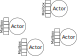

Strategies for Streaming
Arnout Engelen
Curry On 2018, Amsterdam
Open Source toolkit for building Concurrent, Distributed, Resilient, Message-Driven applications on the Java Virtual Machine (JVM)

Main building blocks:
- Actors (akka-actor)
- Streams (akka-streams)
On top of those:
- Akka HTTP
- Akka Cluster
- Akka Persistence
- …
Why a streams library?
- Streaming systems
- Strategies
- Reactive Streams
- Akka Streams
- Demo
- Beyond
1. Streaming systems
Element by element
‘Fast Data’
Within a program
Java Virtual Machine (JVM)
Non-trivial, Ordered
2. Strategies
Naive copying:
while (buf = upstream.read()) {
downstream.write(buf)
}
On the JVM, threads are expensive:
- OS-level thread, stack, scheduling
- JVM-level stack, GC root
Desirable properties
- Non-blocking (to reduce threads)
Non-blocking upstream:
upstream.setBlocking(false);
while (buf = upstream.read()) {
downstream.write(buf)
}
Non-blocking downstream:
downstream.setBlocking(false);
if (downstream.ready()) {
while (buf = upstream.read()) {
downstream.write(buf)
}
}
Non-blocking both?
upstream.setBlocking(false);
downstream.setBlocking(false);
while (buf = upstream.read()) {
downstream.write(buf) // ???
}
3 flavours of non-blocking API:
- Return ASAP
- Asynchronous: Callbacks
- Asynchronous: Events
Desirable properties
- Non-blocking (to reduce threads)
- Asynchronous (decouples reading/writing)

Message passing:
{
case buf => downstream ! buf
}
OutOfMemoryError
Desirable properties
- Non-blocking (to reduce threads)
- Asynchronous (decouples reading/writing)
- Back pressured (avoid overflowing memory)
Back pressure is automatic with blocking I/O:
while (buf = upstream.read()) {
downstream.write(buf)
}
Async, information must travel in both directions:
{
case buf => downstream ! buf
case ReadyForOneMore => upstream ! ReadyForOneMore
}
Parallelism:
{
case buf => downstream ! buf
case ReadyForMore(n) => upstream ! ReadyForMore(n)
}

Desirable properties
- Non-blocking (to reduce threads)
- Asynchronous (decouples reading/writing)
- Back pressured (avoid overflowing memory)
3. Reactive Streams
Reactive Streams Timeline

Reactive Streams
is an initiative to provide a standard
for asynchronous stream processing
with non-blocking back pressure.
java.util.concurrent.Flow
public interface Publisher<T> {
public void subscribe(Subscriber<? super T> s);
}public interface Subscriber<T> {
public void onSubscribe(Subscription s);
public void onNext(T t);
public void onError(Throwable t);
public void onComplete();
}public interface Subscription {
public void request(long n);
public void cancel();
}public interface Processor<T, R> extends Subscriber<T>, Publisher<R> {
}Specifications
- 11-17 requirements (some subtle). Each.
- Technology Compatibility Kit (TCK)
4. Akka Streams
Source.range(0, 20000000);Flow.fromFunction(n -> n.toString());Sink.foreach(str -> System.out.println(str));Source<Integer, NotUsed> source =
Source.range(0, 20000000);Flow<Integer, String, NotUsed> flow =
Flow.fromFunction(n -> n.toString());Sink<String, CompletionStage<Done>> sink =
Sink.foreach(str -> System.out.println(str));RunnableGraph<NotUsed> runnable =
source.via(flow).to(sink);ActorSystem system = ActorSystem.create();
Materializer materializer = ActorMaterializer.create(system);
runnable.run(materializer);val source = Source(0 to 20000000)val flow = Flow[Int].map(_.toString())val sink = Sink.foreach[String](println(_))val runnable = source.via(flow).to(sink)implicit val system = ActorSystem()
implicit val mat = ActorMaterializer()
runnable.run()Java:
Source.range(0, 20000000)
.map(Object::toString)
.runForeach(str -> System.out.println(str), materializer);Scala:
Source(0 to 20000000)
.map(_.toString)
.runForeach(println)Materialization
val graph = Source(0 to 20000000)
.map(_.toString)
.to(Sink.foreach(println))
implicit val system = ActorSystem()
implicit val materializer = ActorMaterializer()
val n1: NotUsed = graph.run()
val n2: NotUsed = graph.run()Materialized values
val source: Source[String, ActorRef] =
Source.actorRef(bufferSize = 23, OverflowStrategy.dropNew)
val sink: Sink[String, Future[String]] =
Sink.reduce(_ + _)
val actor: ActorRef = source.to(sink).run()
actor ! "Message"Materialized values
val source: Source[String, ActorRef] =
Source.actorRef(bufferSize = 23, OverflowStrategy.dropNew)
val sink: Sink[String, Future[String]] =
Sink.reduce(_ + _)
val graph1: RunnableGraph[ActorRef] =
source.to(sink)
val graph2: RunnableGraph[Future[String]] =
source.toMat(sink)(Keep.right)
val graph3: RunnableGraph[(ActorRef, Future[String])] =
source.toMat(sink)(Keep.both)
Actor materialization
Source(1 to 3)
.map(x => x + 1)
.map(x => x * 2)
.to(Sink.reduce[Int](_ + _))
Fusing
Source(1 to 3)
.map(x => x + 1).async
.map(x => x * 2)
.to(Sink.reduce[Int](_ + _))
Fusing
Source(1 to 3)
.map(x => x + 1)
.mapAsync(5)(n => Future.successful(n * 2))
.to(Sink.reduce[Int](_ + _))
5. Demo
TCP Number Server
Alpakka
Alpakka
Community for Akka Streams connectors

6. Beyond
- Other approaches, e.g. fs2, Monix, …
- Future JVM: Fibers/Project Loom
- Other ecosystems
Questions?
‘Scala Spree’ at ING tomorrow!